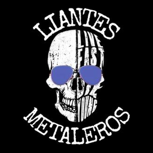

LIANTES
QUIZ

Acerca de Liantes
Bandas Liantes
Eventos Liantes
Galería
×
Asociación sin ánimo de lucro · Badalona
LIANTES
Quiz
Metalero
Live fast, die young… y contesta rápido. ¿Cuánto sabes de rock, metal y de los Liantes?
Tu nombre
Número de preguntas
10
15
20
Todas
Dificultad
Todas
Fácil
Media
Difícil
Categoría
Todas las categorías
¡A liarla!
🏆 Hall of Fame
Cargando preguntas…
Pregunta
1
/
10
🔥
Racha
0
Puntos
0
20
✕ Abandonar
Siguiente
0
puntos
0
Aciertos
0%
Precisión
0
Mejor racha
¿Te has echado unas risas? Ayuda a mantener el quiz vivo 🤘
☕ Invítame a un café
· 1 € con PayPal
Tus fallos
Jugar otra vez
🏆 Hall of Fame
Cambiar opciones
Hall of Fame
Las leyendas Liantes
Puntos acumulados
Mejores partidas
Volver
Borrar Hall of Fame
Seguir jugando